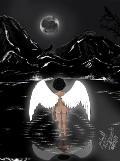
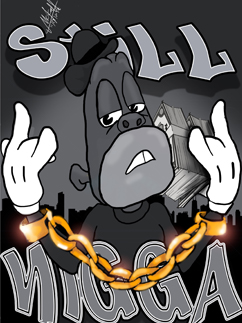
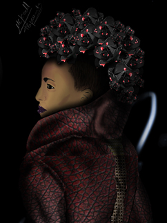
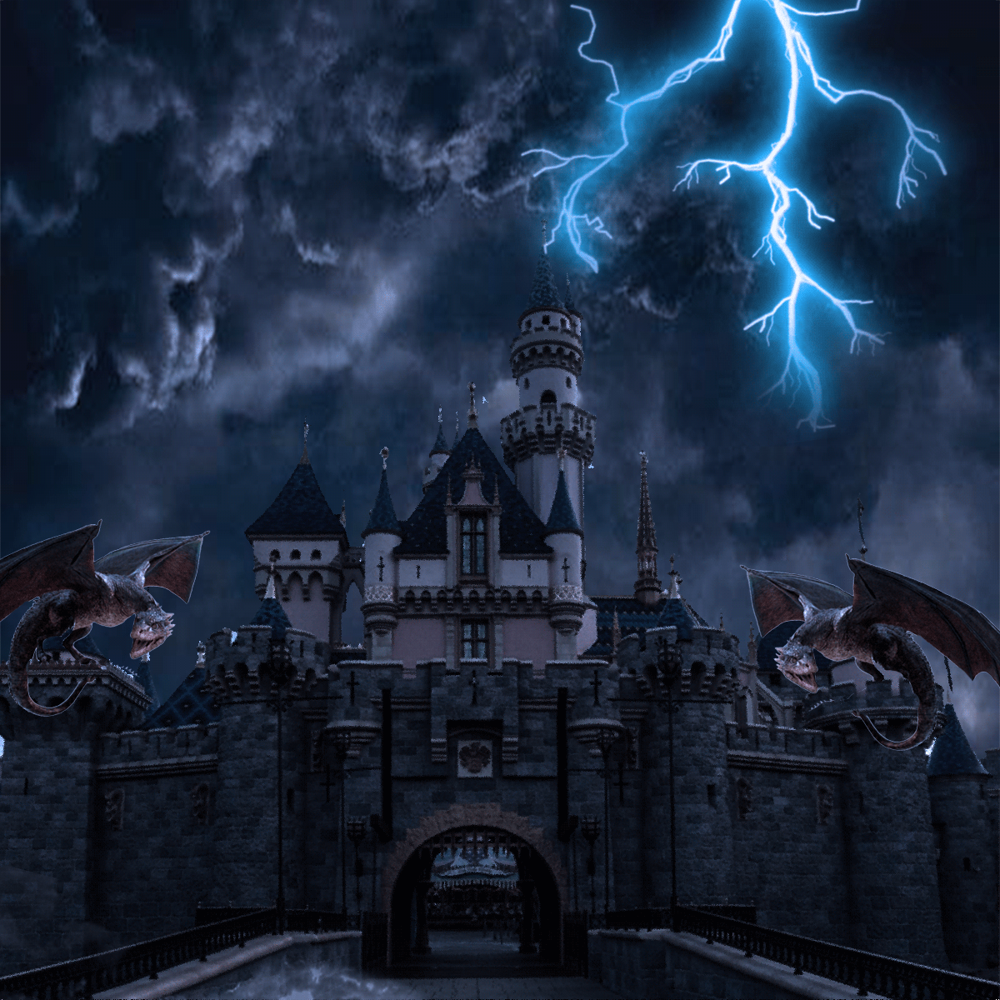
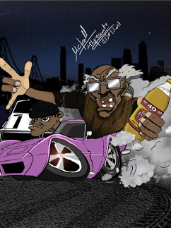
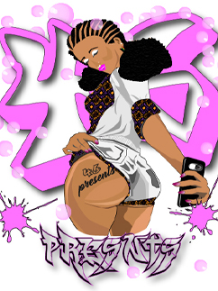
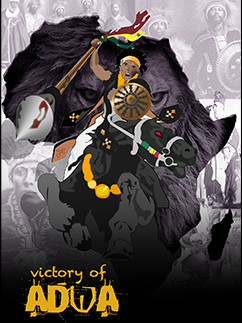
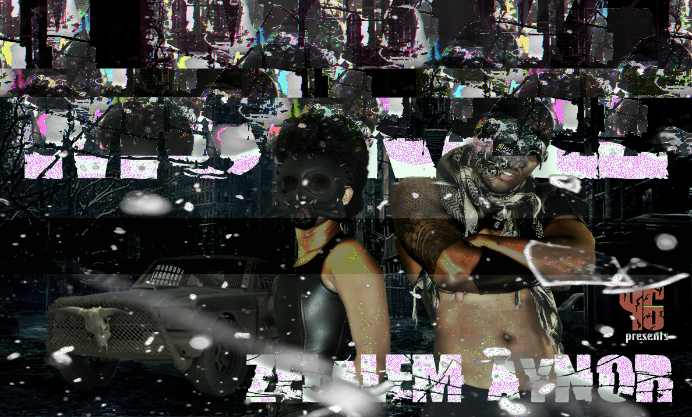

This is an Ethiopian worrior standing besides a black lion (lion of judah.
This symbolizes power, royalty, and courage.
Illustration 2016.

Moon Light
From the darkness comes light. This art work is one of my favorite works that i had to find the meaning for after its done.
Illustration 2016.

Glitch Art
This art wotk is inspired by Jay Z's song The Story Of OJ, released on 2017 in the album 444. Animation was (based on Helen Bannerman’s children’s book The Story of Little Black Sambo)
Illustration 2016.

Beauty
This is an Ethiopian worrior standing besides a black lion (lion of judah.
This symbolizes power, royalty, and courage.
Illustration 2017.

Dark Castle
this is an a gif i made for intro to digital media art class. i transformed the colorfull disney princess castle in to this dark castle.
photoshop 2019.

Hyphy
when i move to california i was impressed by the bay area music, street culture, ans state of mind so i desided to creat this side show .
Illustration 2018.

City Girl
in this art work i mixed my western cultular infulance with the traditional ethiopian culture. a young modern city girl in ethiopian traditional clothing and hair style.
Illustration 2016.

Adwa
The Ethiopian army's victory checked Italy's attempt to build an empire in Africa. The victory had further significance for being the first crushing defeat of a European power by African forces during the colonial era. Battle of Adwa. March 1, 1896.
Illustration 2016.

Glitch Art
this is a glitch art i made for my intro to digital media art class. i used audacity which is an audio software to create the glitching iffect.
glitch art 2019.